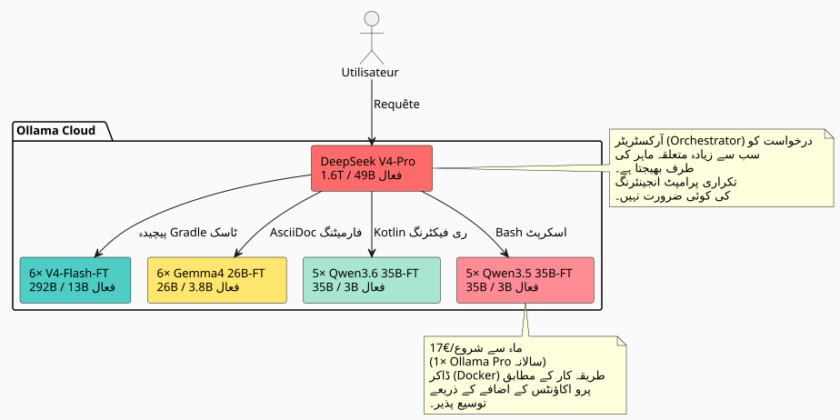

Claude اور GPT سے 27× سے 45× زیادہ مؤثر: کیسے 23 فائین ٹیونڈ (fine-tuned) AI ماہرین کا ایک بیڑا مارکیٹ کو پیچھے چھوڑ رہا ہے
شائع شدہ: 11 May 2026
جب ہم روزمرہ سافٹ ویئر کی ترقی کے لیے LLM استعمال کرتے ہیں، ہم ہمیشہ ایک ہی دیوار سے ٹکراتے ہیں: ماڈل آپ کا کڈ بیس نہیں جانتا۔ وہ نہیں جانتا کہ آپ ایسا پٹرن استعمال کر رہے ہیں۔https://fr.wikipedia.org/wiki/Graphe_orient%C3%A9_acyclique[DAG], ایسا گریڈل کنوانسیون، ایسا علمی سٹریٹیفیکیشن آپ کےhttps://fr.wikipedia.org/wiki/AsciiDoc[.adoc]. پھر ہم اس میں سیاق شامل کرتے ہیں، دہراتے ہیں، سہی کرتے ہیں، دہرائے جاتے ہیں۔ اور وقت — اور پیسا — گزر جاتے ہیں۔
میں تو یہ سوال سختانہ طرح سے پوچھا: میری ویورسپیس پر فائن‑ٹونڈ (fine‑tuned) مڈلز کی ایک ٹیم کا لاگت کتناً ہوگا، جو میری اسٹائل میں کوڈ نکال دے سکتے ہیں، ہر بار انہیں سمجھانے کی ضرورت کے بغیر؟ اور اہم بات یہ ہے: یہ approche کلاسیک مالک حلوں — كلود، جی پی ٹی، جیمی، گروک — سے کس طرح موازنہ کرتی ہے؟
جواب نے مجھے حیرت میں ڈال دیا۔ یہ بس وہ چیز نہیں تھا جو میں سمجھ رہا تھا۔ اور سیکٹر کے بڑے خوالد کے مقابلے میں لاگت/ مؤثر کرنے کی نسبت بے حیا ہے۔ اس کا مکمل تفصیل درج ذیل ہے۔
مسئله: فائن ٹیون کیوں اور RAG نہیں؟
RAG اچھی بات ہے۔ Mon knowledge graph اور mon compartimentage épistémique کام کرتے ہیں۔ لیکن RAG کی بنیادی خرابی یہ ہے: ہر طلب میں، تمہیں связанہ سیاق دوبارہ شامل کرنا پڑتا ہے۔ تمہارا پروMPT لمبا ہوتا ہے، تمہاری لٹینسی بلتھ جاتی ہے، اور ماڈل intériorise کبھی بھی تمہاری پterna کو اندرول نہیں کرتا — وہ ہر بار انhein ایک بیرونی دستاویز کی شکل میں پڑھتا ہے۔
فائن ٹیون، وہ، عضلات کی یاداشت ہے. ماڈل جانتا ہے کہ تو لکھتا ہے`build.gradle.kts`محفوظ کاموں کے ذریعے`tasks.register`, کہ تمہارے`AGENTS.adoc`وہ معیاری قواعد کا پیروی کرتے ہیں، جس میں آپ کا وورک سপیس boroughs میں منظم ہے۔ اس کو یاد دلانے کی ضرورت نہیں ہے۔
|
فائن-ٹون RAG کی جگہ نہیں ہے۔ یہ یک مكمل layer ہے۔ RAG وہی relevant ہے جو ڈیٹا اکثر بدلتی رہے (logs, tickets, حالیہ commits) کے لیے۔ فائن-ٹون طویل مدت کی ساختاری و اسلوبی علم کے لیے ہے۔ |
خبراء کا أسطول: ایک ماڈل نہیں
ایک ہی فائن‑ٹونڈ ماڈل جسے مکمل ورك سпис پر تربیت دی گئی ہے، یہ پہلے ہی اچھی ہے۔ لیکن یہ سب سے بہتر نہیں۔ میر ورك سпис مختلف للغاية مجالات کوغطا کرے ہے:
-
Gradle پلاگ انز (Kotlin, کنوانشن پلاگ انز, مجموعی بنائیں)
-
DAG انجن (Kotlin, شیڈولنگ، تنفیذ)
-
LLM ایجنٹس (Python, LangChain4j, RAG)
-
معماراتی توثیق (AsciiDoc, حکمرانی)
-
Infra/DevOps (Docker, GitHub Actions, CI/CD)
ایک مخصوص موڈل ہر جگہ اچھا ہوگا، کبھی بھی سب سے بہترین نہیں۔ حل؟ ایکخصوصی مادلز کا اسطول, میں ایک اورکیستریٹر ہے جو ہر طلب کو درست ماہر کی طرف منتقل کرتا ہے۔

کل فلیٹ :1 اورکیسٹریٹر + 22 ماہرین = 23 ماڈلز. اور ماہانہ استنتاج کی لاگت؟17€/ماہOllama Pro سالانہ اشتراك میں — حسابوں کی جمع کر کے expansible (موسع) اگر کوٹا پارس ہو جائے، جیسے میری ڈاکر مارٹی اکاؤنٹس technique میں دکھایا گیا ہے۔ ہم 17 یورو سے شروع کرتے ہیں، ضرورت کے مطابق ہر مرحلے پر 20 یورو شامل کرتے ہیں۔ کسی قسم کی बरبادی نہیں۔
میکروسکوپ کے تحت کوڈ بیس: 7 900 فائلوں، 144 000 لائنوں
تربیت کی لاگت کا اندازہ لگانے سے پہلے، یہ جاننا ضروری ہے کہ کیا تربیت دینا ہے۔میں نے اپنی عملی فضا کا کڑائی سے جائزہ کیا، جس میں Gitによって نادیده کیے جانے والی سبھی چیزوں کو سختاً خارج کیا گیا:
----
----
----
----
build/ out/ node_modules/ runtimes/ .gradle/ dist/
target/ venv/ __pycache__/ .cache/ .tox/
----
یہ ٹریک شدہ فائلوں کے لیے نتیجہ ہے :
[cols="2,2"]
|===
|میٹرک |قیمت
|تریک شدہ ملفات ماخذ |**7 896** |کد کی لائن (LOC) |**١٤٣ ٨٠٥** |گٹ ریپوزٹریز |**26** |اہم زبانیں |Kotlin (1 903), AsciiDoc (2 765), Python (5 029)
|===
[IMPORTANT]
====
یہ 5 000+ Python فائلوں شامل ہیں`runtimes/`نوٹ بکس اورUtility scripts. تطبيقی قلب (Gradle plugins، DAG engine، agents) principally Kotlin اور AsciiDoc میں ہے۔
====
اس ماس سے، میں اندازہ لگاتا ہوں کہ میں ایک مصنوعی ڈیٹا سیٹ کا**~170 ملین ٹوکنز**زیرہ ایک انstractرٹر LLM (کودبیس کی تقطیر انstractرشن/جواب جوتوں میں).
=== ماہر کے نوع کے مطابق ڈیٹا سیٹ کا تفصیل
[source,text]
----
Dataset maître (généraliste V4-Flash) : 50M tokens
Expert Gradle/Build : 15M tokens
Expert Kotlin/DAG : 15M tokens
Expert AsciiDoc/Gouvernance: 15M tokens
Expert Agent/LLM/Python : 15M tokens
Expert Infra/CI-CD : 15M tokens
Micro-experts Qwen/Gemma : ~5M tokens chacun
----
== مودلز کا انتخاب: 100% MoE، صفر دھیم
یہی وہ جگہ ہے جہاں معماریت واقعی طور پر مؤثر بن جاتی ہے۔
ایک *dense* ماڈل ہر ٹوکن پر اپنی تمام وزنوں کو فعال کرتا ہے۔ ایک *MoE* (Mixture of Experts) ماڈل صرف اپنی پیرامیٹرز کا ایک جزو فعال کرتا ہے۔ انفرنس — اور فائن‑ٹوننگ — کی لاگت پیرامیٹرز کے تناسب میں ہوتی ہے۔**مفعل**, پیرامیٹرز تک نہیں**جمع کردہ**.
آئیے دیکھتے ہیں کہ آج مارکیٹ MoE میں کیا پیشکش کر رہی ہے Ollama Cloud پر :
[cols="3,2,2,1,3"]
|===
|مودیل |کل پارامٹرز |فعال |تشغيل |Ollama کلاؤڈ
|DeepSeek V4-Pro |1.6 ٹن |49B |3.1% |✅محلّی |ڈیپ سیك V4‑فلش |292B |13B |4.5% |✅ موطنی |Gemma 4 26B-A4B |26B |3.8B |14.6% |✅ مقامی |Qwen3.6-35B-A3B |35B |3B |8.6% |❌ (ابھی تک شامل نہیں کیا گیا) |Qwen3.5-35B-A3B |35B |3B |8.6% |✅ موطنی
|❌ Qwen3.5-27B |27B |27B |100% کثیف |حذف کردہ |❌ Qwen3.5-4B/9B |4B/9B |4B/9B |100% ضخیم |حذف شدہ |❌ جیما 4 31B |31B |31B |100% ضخیم |ختم شدہ
|🧪 Gemma 4 E2B/E4B |5B/8B |5B/8B |100% گھنا |وائلڈیشن پائلائن
|===
[CAUTION]
====
فعالیتی نسبت تشخیصی معیار ہے۔ Gemma 4 26B‑A4B صرف اپنی 26B پیرامیٹرز میں 3.8B کو فعال کرتی ہے — یہ دنس 27B سے 7 گنا کم ہے، comparable coding agent کے исполнения (77.1% vs 80% LiveCodeBench v6 پر) کے لئے۔
====
=== میں گھنا ماڈلز کیوں چھوڑ رہا ہوں؟
استثناء: Gemma 4 E2B اور E4B. ان دو مودلز، Apache 2.0 کے تحت، کم لاگت پر ٹرーニング پائپ لائن کے ٹیسٹ اور تصدیق کے لیے مناسب ہیں۔ ایک ran 2-3 گھنٹے کا ایک E2B پر 5 ڈالر سے کم خرچ ہوتا ہے — اگر ڈیٹا سیٹ یا ہائپرپیریمٹر غلط ہوں، تو ہم صرف چند ڈلر میں جان جاتے ہیں۔ ایک بار پائپ لائن تیار ہونے کے بعد، وہ Incluso-ultrasmall کاروں (سادہ فارمٹنگ، ثنائی تقسیم) کے لیے بھی استعمال کیے جا سکتے ہیں۔ لیکن اصلی فلیٹ کے ماہرین کے لیے، میں MoE پر رہتا ہوں۔ یہ وجہ ہے:
۔لیکن یہ صرف یہ نہیں: Gemma 4 E2B/E4B، باریک مخفی سازی کے ماہرین
[NOTE]
====
گوگل نے چھوٹے مادلز کو نativi ٹول کالنگ میں مسابقتی بنایا ہے — وہ فنگکشنز کال کر سکتے ہیں، رگیкс کو منیپولیٹ کر سکتے ہیں، پترن تلاش کر سکتے ہیں۔ انکو ایمیلیز، ٹوکنز، UUIDs، فائل پاتھز جیسے انہیامیشن کے مثالوں پر فائن‑ٹون کرنے کے بعد، وہ بن جاتے ہیں**ڈیٹا سیٹ کے انینیسئرز**بہت تیز. ہم ان کو خام متن کا بلوک دیتے ہیں، وہ بلاتے ہیں`sed`/`regex`via ایک ٹول call کے ذریعے وہ صاف کردہ بلاک واپس کر دیتے ہیں۔ Inferencing کاخراج نہایت کم ہے: 5B فعال، یہ ایک ابتدائی GPU پر آسانی سے fit ہو جاتا ہے۔ یہ ماڈل کاروباری ماہر نہیں ہیں — وہ**متخصص مزدور**ڈیٹا سیٹ کی پیداوار زنجیر میں
====
* اس کی تربیت VRAM (QLoRA میں بھی) اس کے متناسب ہے**27B مجموعی**
* اس کا ٹریننگ وقت اس کے متناسب ہے**27B فعال**
Qwen3.6-35B-A3B (MoE) کے ساتھ ہم موازنہ کرتے ہیں :
[cols="3,2,2,2"]
|===
| |Qwen3.5-27B (گستاخ) |Qwen3.6-35B-A3B (MoE) |نسبت
|VRAM QLoRA |~55 GB |~35 GB |1.6× |GPU گھنٹے (8M ٹوکن) |تقریباً 12 گھنٹے |~4 گھنٹے |**3×** |fine-tune ki lagat |~$24 |~$8 |**3×** |SWE-bench متحقق شدہ |75.0% |73.4% |قابل موازنہ
|===
MoE ko agent-coding ki performance (5% ke paas) ke liye train karne mein 3× kam lagta hai. 22 experts ke liye, farq hazaaron euro ke barabar hai.
== Training ka andaza: 811 H100-ghante
میں نے QLoRA 4-bit میں، اوپر وضاحت کردہ datasets کے ساتھ، مॉڈل بار مॉڈل training کا لاگت پھیلایا۔
=== مائیکرو-ایکسپیرٹس MoE ہلکے (3-3.8B فعال)
یہ ماڈلز ایک رن کے لیے 1 H100 (80 GB) کی ضرورت رکھتے ہیں۔ Q4 میں ماڈل کی VRAM تقریباً 13-18 GB ہے، LoRA امٹیمايزر کی Situations اور activation کے لیے کافی خالی جگہ چھوڑتا ہے۔
[cols="4,2,3,2"]
|===
|مودل |رنز کی تعداد |GPU-h/run |کل GPU-h
|جیمما 4 26B-A4B-FT |6 |3.5 h |**21 گھنٹے** |Qwen3.6-35B-A3B-FT |5 |4.0 h |**20 بجے** |Qwen3.5-35B-A3B-FT |5 |4.0 h |**20 گھنٹے** |*مجموعہ جزوی مائıkرو* | | |*61 h*
|===
=== تنفیذ کرنے والے V4-Flash (13B فعال / 292B ذخیرہ شدہ)
DeepSeek V4-Flash ایک خصوصی مورد ہے۔ حتی اگر صرف 13B ہر ٹوکن میں فعال ہوتے ہیں، Q4 میں مکمل مودل کا وزن تقریباً 142 GB ہے — تمام ماہرین کو تربیت کے دوران VRAM میں موجود ہونا چاہیے۔ لہٰذا**3× H100**رن کرنے سے آرام دہ ہونے کے لیے۔
[cols="4,2,3,3,2"]
|===
|نمونہ |ڈیٹا سیٹ |GPUs |گھنٹے |کل GPU-h
|V4-Flash-Base عامِلہ |50M tok |3× H100 |50 h |**150 گھنٹے** |V4-Flash ماہر ×5 |15 ملین ٹوکن |3× H100 |40 h |**600 گھنٹے** |*تنفيذيين کا مجموع* | | | |*750 h*
|===
[cols="3,2,1"]
|===
|**کل** | |**811 H100-h**
|===
[NOTE]
====
مقاربے کے طور پر، V4-Flash کا مکمل فائن-ٹن (QLoRA کے بغیر، تمام وزن) اس کی تخریبی لاگت ~4 000 H100-h صرف چھ موڈلز کے لیے ہوگی۔ QLoRA لاگت کو 5 سے تقسیم کرتا ہے۔ یہ اس سطح پر پروجیکٹ کو معاشی طور پر قابل קיام بنانے کا ایکمात्र طریقہ ہے۔
====
=== GPU کے رسوں: کون کیا کرائے پر لیتا ہے مئی 2026 میں
میں نے H100 کے اصلی فراہم کرنے والوں کا بینچمارک کیا۔ میٹر کی قیمت 811 گھنٹے کے لیے۔
[cols="3,2,2,2"]
|===
|مُؤَجِّر |$/H100·h |کل 811h |اعتمادپذیری
|**Vast.ai جگہ** |$1.60 |**$1 298** |★★☆ متوقف کرنے کے قابل |**کریوسو کلاؤڈ** |$2.00 |**$1 622** |★★★★ قابل اعتماد ڈیٹا سینٹر |FluidStack |$1.98 |$1 606 |★★★ |ٹینسرڈاک |$1.80 |$1 460 |★★☆ |RunPod |$2.29 |$1 857 |★★★ اچ{split} معاہدہ |CoreWeave |$2.25 |$1 825 |★★★★ کمپنی |Lambda Labs |$2.49 |$2 019 |★★★★ پریمیئم
|===
[TIP]
====
Vast.ai سبٹ سب سے سستا ہے لیکن آپ کے چلاؤ کسی بھی وقت روک دی جا سکتے ہیں۔ تربیت کے لیے یہ خطرناک ہے۔ Crusoe $2.00/h سب سے بہتر اعتبار/قیمت کا انسباط ہے۔ Vast کے مقابلے $324 کا اضافی خرچ خاطر کی سکون کے لائق ہے۔
====
=== Wall-clock : سب کو سیکھنے میں کتنے وقت لگتے ہیں؟
ایک صرف 3× H100 نود کے ساتھ، 31 رanz (1 عام + 30 ماہر) تقریباً**12 دن**سلسلے میں. اگر تو 2 نوڈز parallel پر کرایے لیتی ہے، تو یہ ... tak gir jātā hai**6 دن**.
عملی طور پر، مائیکرو ایکسپرتس الگ الگ نوڈز پر چلتے سکتے ہیں (ایک H100 ہر) جبکہ V4-Flash 3× H100 نوڈ پر قبضہ کرے ہیں۔ ذہین منصوبہ بندی کے ساتھ :
----
Nœud A (3× H100) : V4-Flash généraliste → V4-Flash experts ×5 (11 jours) Nœud B (1× H100) : Gemma 4 26B ×6 → Qwen 36 ×5 → Qwen 35 ×5 (6 jours)
7 دن کی کرایہ، vollständ مڑا ہوا
== انفرنس: Ollama Cloud پر 23 ماڈلز، 17 یورو/ماہ سے
یہ معماری کا سب سے خوبصورت حصہ ہے۔
Ollama Cloud خصوصی مودلز اپ لوڈ کرنے کی اجازت دیتا ہے (Pro پلān کیخصوصیت)۔ میرے 22 فیائن-ٹونڈ مڈلز ان میں ڈال دیے گئے ہیں`.gguf`میرے Ollama سبيس پر، خفیہ کے طور پر مارک کردہ، اور معياري API کے ذریعے رسائی حاصل ہو سکتي ہے۔
[plantuml, inference-flow, svg]
----
@startuml
skinparam backgroundColor #FAFAFA
skinparam defaultFontSize 12
|Utilisateur|
start
:Tâche de développement;
|Orkestrateur (V4-Pro)|
:Classifier la tâche\n(domaine + complexité);
if (Tâche simple,\nspécialisée ?) then (oui)
:Router vers micro-expert\n(Gemma 4 26B-A4B-FT\n ou Qwen3.6-35B-A3B-FT);
elseif (Tâche complexe,\nconventions fortes ?) then (oui)
:Router vers exécutif\n(V4-Flash-FT);
else (non)
:Résoudre avec V4-Pro\n(architecture, décision);
endif
|Modèle ciblé|
:Génère le code/output\n**dans mon style**,\n90%+ first-shot correct;
:Retourne la réponse;
stop
@enduml
----
=== ہم 17 یورو/ماہ سے شروع کرتے ہیں، ضرورت پڑنے پر سکیل کرتے ہیں
Ollama Pro پلن (17 یوروعملہ/مہینہ سالانہ) 3 متقابل بعدل ماڈلز کی اجازت دیتا ہے۔ اس ماہیت میں، مجھے کبھی بھی 2-3 سے زیادہ ماہرین ایک ساتھ کی ضرورت نہیں ہوتی۔
* تقسيم کا مرحلہ (V4-Pro) ایک سلاٹ اشغال کرتا ہے، چند سیکنڈ
* مخصوص ماہر 1 سلاٹ اشغال کرتا ہے، اس کے جواب پیدا کرنے کا وقت
* तीसरी स्लॉट محفوظ ہے موازی کاموں کے لیے
اگر استعمال بڑھتا ہے، میں اضافی پرو آکانٹس ڈوکر طریقے سے شامل کرتا ہوں جو xref:0120_cumuler_deux_abonnements_ollama_pro_docker_post.adoc[mere مضمون میں] بیان کردہ ہے۔ 100 یورو/ماہ کا ماکس پلن نہیں — میں صرف وہی شامل کرتا ہوں جس کی مجھے واقعی ضرورت ہے۔
صرف محدود کرنے والا عنصر یہ ہے**کووٹی GPU-وقت**Ollama ماہانہ (50× مفت پلن Pro کے لیے). میرے استعمال کے لیے روزانہ کئی سو طلبات کافی ہیں۔
[IMPORTANT]
====
V4-Pro (49B فعال) کا کال Gemma 4 26B-A4B (3.8B فعال) مقابلے میں حدیدی لاگت ہے**مجھے بھی: صفر**. یہ Ollama پیکیج compute کے فرق کو سمیٹا ہے۔ میرا صرف ایک مؤشر لاتینسی ہے۔
====
=== روٹنگ عملی طور پر
----
Volume de requêtes estimé : ~500/jour
├─ 50% → Gemma 4 26B-A4B-FT (micro, 3.8B actifs) │ Formatage AsciiDoc, scripts simples, conventions nommage │ ├─ 25% → V4-Flash-FT (exécutif, 13B actifs) │ Plugins Gradle, refactoring Kotlin, génération DAG │ ├─ 15% → Qwen 35B MoE-FT (micro, 3B actifs) │ Tâches intermédiaires, review de code, documentation │ └─ 10% → V4-Pro (orkestrateur, 49B actifs) Décisions architecturales, refactoring transverse, problèmes vraiment nouveaux
ٹرافیک کا زیادہ تر حصہ چھوٹے سے گزرتا ہے۔ بड़ा ماڈل صرف آخری حلی کے طور پر مداخلہ کرتا ہے۔
== دردناک مثال : Claude، GPT، Gemini، Grok vs میری فلیٹ
یہاں فاصلے کی تبدیلی ڈھلوان سے بڑھتی ہے۔ دیکھتے ہیں کہ ایک ہی مقدار کا کام (500 طلبات/روز، تقریباً 300 ٹوکن انپٹ + 2000 ٹوکن آؤٹپٹ، اوسط) کے لئے مارکیٹ کی مالکیت رکھنے والے حلوں کے ساتھ کتنی لاگت آئے گی مئی 2026 میں۔
=== Anthropic — Claude (قیمتیں ما 2026)
Anthropic ne haalihan *kam kiya* uske daam. DeepSeek aur Qwen jaise open-weight solutionon ka dabao mehsoos kiya ja raha hai.
[cols="3,2,2,2,2"]
|===
|مودیل |$/MTok |آؤٹ پٹ $/MTok |روزی لاگت |**ماہانہ خرچ**
|Opus 4.7 (سب سے زیادہ ذہین) |$5 |$25 |$25.75 |**772 ڈالر** |سونٹ 4.6 (متوازن) |$3 |$15 |$15.45 |**$463** |ہائکو 4.5 (سب سے تیز) |$1 |$5 |$5.15 |**$154**
|===
[CAUTION]
====
یہ رسے *après* Anthropic کی سب سے نئی قیمت کمی (مئی 2026) کے بعد ہیں۔ اس سے پہلے، Opus $15/$75 per MTok پر تھا۔ オープン-waight کا خوف حقیقی ہے۔
====
کلاود کا سب سے سستا مڈل — هائکو 4.5 تک**154€/ماہ**— 9× زیادہ خراج ہوتا ہے میری Ollama Pro سبسکرپشن (17€) کے مقابلے میں۔ اور Haiku میری codebase کو نہیں جانتا، میرے انداز میں جنریٹ نہیں کرتا، اور نظامی prompt engineering کی ضرورت ہوتی ہے۔
سب سے زیادہ ذہین — Opus 4.7 — بجٹ پر اُڑا دیتا ہے**772 یورو/ماہ**ہر روز 500 طلبات کے ایک متواضع حجم کے لیے. یا**45× زیادہ مہنگا**کہ میرا حل.
=== OpenAI — GPT (مئی 2026 کی قیمتیں)
[cols="3,2,2,2,2"]
|===
|مودیل |$/MTok |$/MTok |قیمت/روز |**قیمت/ماہ**
|GPT 5.5 (الأكثر ذكاءً) |$5 |$30 |$30.90 |**$927** |GPT 5.4 (معیاری) |$2.50 |$15 |$15.45 |**$463** |جی پی ٹی 5.4 مینی |$0.75 |$4.50 |$4.64 |**$139**
|===
OpenAI ka « iqtisādi » model — GPT 5.4 Mini 139€/mah — meri subscription ka 8 guna kharch karta hai, ek aise model ke liye jo meri conventions ke baare mein kuch nahi janta aur bhari prompt engineering ki zaroorat hoti hai.
GPT 5.5، ان کا فنڈ سٹاپ :**927 یورو/ماہ**. میری کوڈ بیس پر *zero-shot* استعمال کرنے کے لیے۔ ہر کام پر 2-3 تکرارات، اسٹائل کے غیر مہارت ہونے کی وجہ سے، واقعی ماہانہخراج آسانی سے دوگنا ہو جاتا ہے۔
=== Google — Gemini (ٹاریف مئی 2026)
[cols="3,2,2,2,2"]
|===
|مثال |$/MTok |$/MTok |خرچہ/دن |**ماہانہ لاگت**
|جمنی 3.1 پرو (عالی) |$3.50 |$17.50 |$18.00 |**540 ڈالر** |Gemini 3.1 Pro |$2 |$10 |$10.30 |**$309** |Gemini 3 Flash |$0.30 |$1.50 |$1.54 |**۴۶ ڈالر**
|===
Gemini 3 Flash 46 يورو/ماہ کے لیے صاف قیمت پر مسابقتی ہے — لیکن فن-ٹون کے بغیر، یہ «عام» کوڈ بناتا ہے۔ یہ *Cheroliv* کوڈ نہیں۔
=== Grok — xAI (مئی 2026 کے ٹریفز)
[cols="3,2,2,2,2"]
|===
|مودل |$/MTok |$/MTok |قیمت/روز |**ماہانہ لاگت**
|گروک 4 |$4 |$16 |$16.48 |**$494** |گروک 4 مینی |$0.80 |$3.20 |$3.30 |**$۹۹**
|===
=== مائیکروسفت — ایژر اوپن اے آئی (قیمت مئی 2026)
Azure، OpenAI API کے مستقیلی Rates کے مطابق Rates لاگو کرتا ہے، لیکن اس کے علاوہ انفراستラクچر اور نٹ ورک کا بھی billet کرتا ہے۔ محفوظ شدہ سروس کے لیے 10‑20% اضافی لاگت کا حساب لگانا پڑتا ہے۔
[cols="3,2,2,2,2"]
|===
|نمونہ |$/MTok |آؤٹ پٹ $/MTok |روزانہ لاگت |**قیمت/ماه**
|GPT 5.4 (Azure, Global) |$2.50 |$15 |$15.45 |**463 ڈالر** |GPT 5.4 + انفراسٹرکچر |اضافی خرج 15% |زائد 15% |$17.77 |**$533**
|===
[NOTE]
====
موجودہ رسوم API سے متعلق ہیں، « chat » اشتراکات نہیں (Claude Pro ۲۰ ڈالر/ماہ، ChatGPT Plus ۲۰ ڈالر/ماہ). یہاں *ڈویلپر* استعمال کی موازنہ کی جاتی ہے، جہاں آپ API کے ذریعے روز سو سے زائد طلبات karte hue پیدا کرنے، دوبارہ ترتیب دینا، دستاویز کرنے کے لیے. عوامی اشتراکات کی حد 500 طلبات/روز سے پہلے ہی زیادہ ہو جاتی ہیں.
====
=== آخری مقارنہ جدول
[cols="3,2,2,2,2,2"]
|===
|حل |معرفت کوڈ بیس |ضمنی اسٹائل |ماہانہ هزینه |دہرائیں |**حقیقی لاگت**
|**میری فلیٹ (Ollama Pro)** |✅ مناسب طور پر ٹنڈ |وزنوں میں |**17€** |0-1 |**۱۷ یورو** |Claude Opus 4.7 |❌ زِيرو شاٹ |❌ پروپمت ضروری |$772 |2-3 |$1 500-2 300 |Claude Haiku 4.5 |❌ زيرو ش럿 |❌ ضروری پرامپٹ |$154 |3-4 |$460-615 |GPT 5.5 |❌ صفر شٹ |❌ ضروری پرامپٹ |$927 |2-3 |$1 854-2 781 |GPT 5.4 |❌ صفر شاٹ |ضروری پرامپٹ |$463 |2-3 |$925-1 390 |GPT 5.4 Mini |❌ صفر شاٹ |پرمپٹ ضروری |$139 |3-5 |$417-695 |جمنی 3.1 پرو بالند |❌ صفر شٹ |❌ ضروری پرامپٹ |$540 |2-3 |$1 080-1 620 |Grok ۴ |(blank) |❌ ضروری پرومپٹ |$494 |2-3 |$988-1 482 |**ایژر GPT 5.4** |❌ Zero-shot |❌ ضروری پرامپٹ |$533 |2-3 |$1 066-1 600
|===
[plantuml, cost-comparison, svg]
----
@startuml
skinparam backgroundColor #FAFAFA
title گنتی/کفالت رپورٹ — میری فلیٹ vs مارکیٹ (مئی 2026)
rectangle "17 يورو/مہینہ" as OURS #4ECDC4
rectangle "اوپاس ۴.۷\n772 یورو" as OPUS #FF6B6B
rectangle "Sonnet 4.6\n463€" as SONNET #FF8B94
rectangle "GPT 5.5\n927€" as GPT #FFD93D
rectangle "Gemini 3.1 Pro\n540€" as GEMINI #6C5CE7
rectangle "Grok 4\n494€" as GROK #A8E6CF
rectangle "ہائیکو 4.5\n154€" as HAIKU #DFE6E9
rectangle "GPT 5.4 Mini\n139€" as MINI #B2BEC3
note bottom of OURS
Avec fine-tune intégré.
Zéro prompt engineering.
90%+ first-shot correct.
end note
@enduml
----
17€/ماہ میں 23 ماہرین (fine-tuned) AI کے لیے۔ فلجشپ Claude Opus 4.7 کی قیمت**45× زیادہ مہنگا**میرے codebase پر کم معیار کے لئے. GPT 5.5 قیمت**54× زیادہ مہنگا**. مارکیت میں سب سے سستا ماڈل (Gemini Flash 46€) بھی قیمتی ہے**2.7× زیادہ**میرے وورک سیلے کی معلومات کے بغیر
فیصلہ قطعی : MoE معماریوں پر fine‑tune، 2026 میں، صرف « moins cher » نہیں۔ یہ کارآمدی کا ایک عامل ہے**27× سے 54×**پر کوسٹ/کیفیت کے تعلق سے ملکی حلوں کے مقابلے میں۔ ان ٹھروپیک، اوپن اے آئی، گوگل — سب ان کو معلوم ہے، اور اس لیے وہ پانیک میں اپنی قیمتیں کم کر رہے ہیں۔
== کارکردگی factor: 5-8× vs V4-Pro-only استعمال کرنا
دو انتہاوں کا موازنہ کریں۔
=== سيناريو اے: V4-Pro اکیلے سب کے لیے
[cols="3,2"]
|===
|مٹرک |قیمت
|کوڈ بیس کا علم |0 (صفر-شاٹ) |کونیونشن نيمنگ |40-60% پہلا شافٹ درست |ضروری پرامپٹ انجینیئرنگ |ہاں، نظامی |ہر کام پر ایٹریشنز |2-3 |انفرنس کا خرچ |$100/ماہ (Ollama Max) |اوسط لیتینسی |~20 tok/s + نیٹ ورک
|===
=== سيناريو ب : منظم MoE فليٹ
[cols="3,2"]
|===
|متریک |قیمت
|کُوڈ بیس کی جانکاری |شامل (fine-tune) |نام کی عرف |90-95% پہلا شوٹ درست |پرامپٹ انجینیئرنگ |نہ (اسلوب وزنوں میں ہے) |ہر کام کے لیے تکرار |0-1 |انفرنس کی لاگت |$60/مہینہ (3× Ollama Pro) |متوسط تاخیر |تقریباً 50 ٹوک/سی (ہلکے ماڈلز)
|===
[cols="4,2,2,2"]
|===
|بعد |V4-Pro صرف |أسطول MoE |عامل
|کلاؤڈ ماہانہ لاگت |$100 |**$۶۰** |1.7× |انجیکشن کرنے کے لیے سیاق |عالی (prompt) |**صفر** |∞ |تکرارات اوسط |2-3 |**0-1** |2-3× |محسوس کی گئی لیتنس |20 tok/s |50 tok/s |**2.5×** |First-shot correct |50% |90%+ |**1.8×**
|===
**کلی کارآمدی فیکٹر : 5-8×**— محسوس کردہ ڈویلپر پیدااری میں.
[NOTE]
====
عامل کو ٹوکنز یا ڈالرز میں نہیں ناپا جاتا۔ اس کا پیمانہ « کتنا وقت میں مڈل کو بتاتا ہوں کہ اسے پہلے سے جاننا چاہیے تھا » ہوتا ہے۔ فائن‑ٹونڈ مڈلز کے ساتھ، یہ وقت صفر کی طرف رجحان کرتا ہے۔
====
== پورا بجٹ : ایک one-shot'investment، ایک مسخرہ پکیج
[cols="3,2"]
|===
|پوسٹ |مبلغ
|GPU کی تربیت (811 H100-گھنٹہ، کروسیو $2/ghanta) |**$1 622** |синٹھیک ڈیٹا جنریشن (API LLM) |**$٤٠٠** |انفرنس (Ollama Pro سالنیہ، $17/ماہ) |**$204** |**کل پہلا سال** |**$2 226** |**ماہانہ معادل** |**$186** |**تخمینہ شدہ ہر طلب کے لیے لاگت** |< $0.01
|===
[plantuml, budget-breakdown, svg]
----
@startuml
skinparam backgroundColor #FAFAFA
rectangle "بجٹ سال 1 : $2 226" as Total #E8E8E8 {
rectangle "Training GPU\n$1 622 (73%)" as Train #FF6B6B
rectangle "ڈیٹا سٹ\nتقطير\n$400 (18%)" as Data #FFE66D
rectangle "Ollama Pro\n$204 (9%)" as Cloud #4ECDC4
}
note bottom of Total
$186/mois équivalent année 1.
Dès l'an 2 : $17/mois.
Amorti par ~$235 de CA
mensuel avec marge 95%.
end note
@enduml
----
$186/ماه پہلا سال,**$17/ماہ**سال 2 سے، نٹ فلیکس پرِیمیم اشتراك کی قیمت، 23 ماہر AI کی ایک ٹیم جو 24/7 دستیاب ہے، جسے *mere style* mein code likhte hain, bina mujhe unhe apni conventions samjhane ki zaroorat nahi.
[plantuml, inference-flow, svg]
----
@startuml
skinparam backgroundColor #FAFAFA
skinparam defaultFontSize 12
|Utilisateur|
start
:Tâche de développement;
|Orkestrateur (V4-Pro)|
:Classifier la tâche\n(domaine + complexité);
if (Tâche simple,\nspécialisée ?) then (oui)
:Router vers micro-expert\n(Gemma 4 26B-A4B-FT\n ou Qwen3.6-35B-A3B-FT);
elseif (Tâche complexe,\nconventions fortes ?) then (oui)
:Router vers exécutif\n(V4-Flash-FT);
else (non)
:Résoudre avec V4-Pro\n(architecture, décision);
endif
|Modèle ciblé|
:Génère le code/output\n**dans mon style**,\n90%+ first-shot correct;
:Retourne la réponse;
stop
@enduml
----
edster.cloud اور اس کی تقریباً 95% مارجن کے ساتھ، بیک ان پونٹ پر**~$2 340 اضافی CA**سال کے دوران. عملی طور پر :
* 1 سافٹ ویئر پلیٹنگ میشن → $3 000-5 000 → مغطی سرمایہ کاری + منافع
* 1 کاراپوریٹ ٹریننگ → $5 000-10 000 → آرام دہ
* ضمنی اپ سیل : "میری AI ٹیم میری سافٹ ویئر فارج کا مقتدر ہے" → تِجاری تمایز
سال 2 سے آگے، ٹریننگ اب و بعد ادا نہیں کی جاتی (ڈیٹا سیٹ کے اپ ڈیٹ کے سिवائے)۔ سالانہ خرچ ... تک घट جاتا ہے**$204**($17/ماہ). لاگت/قییمت کا تناسب ایک یونیکورن جیسا ہے: تقریباً صفر۔
== تمرین کی límites
Wait that's mixing languages. Must be Urdu only. Should be: "تمرین کی حدود". Yes.
</think>
تمرین کی حدود
یہ ایک *تقریبی اندازہ* رہتا ہے۔ کئی متغیرات budget کو متاثر کر سکتے ہیں :
[cols="2,3"]
|===
|متغیر |اثر
|سنٹیٹک ڈیٹا سیٹ کی تولید |اگر distillation API خراب (hallucinations, غلط جوڑے) ہے تو انسانی وقت درکار ہے۔ خفیہ لاگت |کوانٹا GPU-time Ollama |اگر استعمال پرو پلان کے کوٹے سے زیادہ ہو جائے، تو اوپر کی ترقی کرنی ہوگی یا مخصوص GPU پر منتقل ہونا پڑے گا۔ |فائن-ٹونز کی مؤثر کیفیت |ایک ناکام فائن‑ٹیون → دوبارہ کرنے کی ضرورت ہے۔ حقیقی خطرہ ہائپرمیٹرز ہے، GPU کی placement نہیں۔ |نماذج کی تيز ترقی |Qwen3.6/Gemma 4 کم سے کم 1 ماہ پہلے جاری کر دیئے گئے تھے۔ 6 ماہ بعد، اگلی نسل بہتر ہوگی اور فائن-ٹون کرنے میں سستی ہوگی۔
|===
[WARNING]
====
پہلے *ایک* مائیکرو ماڈل پر pipe line کی ٹیسٹنگ کیے بغیر 811 گھنٹے کی ٹریننگ نہ شروع کریں۔ Qwen 35B-A3B پر 3-4 گھنٹے کے run کی لاگت $8 ہے۔ اگر ڈیسٹارپ خراب ہو تو آپ کو $8 میں معلوم ہو جائے گا، $1 622 نہیں۔
====
== نتیجہ: فائن‑ٹون ایک سہولت مند لکچری بن گیا ہے
ایک سال پہلے، 292B پارامیٹرز کا ماڈل (مême QLoRA کے ساتھ بھی) فائن‑ٹوننگ ایک تحقیق کا موضوع تھا۔ آج، مے 2026 میں، یہ ایک مستقل ڈویلپر کے لیے ممکنہ پروجیکٹ ہے:
* **811 H100-گھنٹے**ترーニング — 1,622 ڈالر کراسو میں
* **23 مخصوص ماڈلز**اوولاما کلاؤڈ پر بار کیا گیا —**$17/ماہ**
* **0 سرور، 0 مقامی GPU، 0 انفراسٹرکچر کی مرمت**
دیموکraticisation تین متوافق عوامل سے آئی ہے:
1. **معماريات MoE**— ijāzat dete hain مؤثر طریقے سے بہتر بنانے کے مाडلز، جن میں صرف ایک حصہ وزنیں فعال ہوں
2. **Ollama Cloud کے مضبوط پلان**— جس نے متغیر لاگت (per‑token) کو ثابت لاگت (abonnement) میں تبدیل کر دیا
3. **عالی معیار کے open-weight ماڈلز**— DeepSeek V4, Qwen3.6, Gemma 4 MIT/Apache 2.0 لایسنسوں کے تحت ہیں
تمدن اس ترہ بڑھتا ہے کہ ہم جو اہم اعمال بچھوڑ کر سوچے بغیر کر سکتے ہیں، ان کی تعداد بڑھ دی جاتی ہے۔
فائن-ٹون exactamente یہ ہے: ایک آپریشن جو آپ مشین پر ڈلیگیت کرتے ہیں تاکہ اس بارے میں سوچنا بند کر دیں۔ اور 2026 میں، یہ ایک جونیور ڈیвелپر کی ماہانہ تنخواہ سے کم خرچ ہوتی ہے۔
---
_مقالہ {jbake-date} کو شائع_
== فلیٹ کے فائن-ٹونڈ ماڈلز
[cols="2,2,2,2,3"]
|===
|سائز فعال |عدد |بنیادی ماڈل |ڈومین |ڈیٹا سیٹ
|13B |1 |DeepSeek-V4-Flash-Base |Workspace عام |50M ٹوکنز |13B |5 |DeepSeek-V4-Flash |Gradle, Kotlin, DAG, Doc, Infra |15M ٹوکنز |3.8بليون |6 |Gemma 4 26B-A4B |مائیکرو ٹاسکیں، فارمیٹنگ، اسکریپٹس |5M ٹوکنز |3B |5 |Qwen3.6-35B-A3B |ریفاکٹرنگ, جائزہ, میانی دستاویز |5 ملین ٹوکنز |3B |5 |Qwen3.5-35B-A3B |لیگاسی کاروں، ہم آہنگی |5M ٹوکن
|===
== منابع
=== ہگینگ فیس پر اوپن وِیٹ ماڈلز
* https://huggingface.co/deepseek-ai/DeepSeek-V4-Flash-Base[DeepSeek V4-Flash-Base — 292B پارامیٹرز، لاایسنس MIT]
* https://huggingface.co/Qwen/Qwen3.6-35B-A3B[Qwen3.6-35B-A3B — 35B/3B اچلائے گئے، لائسنس Apache 2.0]
* https://huggingface.co/Qwen/Qwen3.5-35B-A3B[Qwen3.5-35B-A3B — 35B/3B فعال، Apache 2.0 لائسنس]
* https://huggingface.co/google/gemma-4-26B-A4B-it[Gemma 4 26B-A4B — 26B/3.8B فعال، لائسنس Apache 2.0]
=== مصادر تعریفات کے (مئی 2026)
* https://ollama.com/pricing[قیمتیں Ollama Cloud — پلن پرو $17/ماہی سالانہ]
* https://www.anthropic.com/pricing[قیمتیں Anthropic — Claude API (Opus 4.7 $5/$25, Sonnet 4.6 $3/$15, Haiku 4.5 $1/$5)]
* https://openai.com/api/pricing/[قیمتیں OpenAI — GPT API (GPT 5.5 $5/$30, GPT 5.4 $2.50/$15)]
* https://deepinfra.com/pricing[DeepInfra کی قیمتیں — GPU انسٹنسز H100 $1.79/ghanta, B200 $2.79/ghanta]
* Vast.ai, Crusoe Cloud, FluidStack, TensorDock, RunPod, CoreWeave, Lambda Labs — دستی قیمت ریکارڈ، مئی 2026 کی تاریخ شدہ
=== رسمی اعلانات
* https://qwen.ai/blog?id=qwen3.6-35b-a3b[رسمی اعلان Qwen3.6-35B-A3B — بلاگ Qwen]— agentic coding, Apache 2.0, 262K سیاق
[cols="3,2,2,2,2"]
|===
|ماڈل |$/MTok |$/MTok |لاگت/دن |**لاگت/مہینہ**
|GPT 5.4 (Azure, Global) |$2.50 |$15 |$15.45 |**$463** |GPT 5.4 + انفراسٹرکچر |15% اضافی قیمت |15% اضافی قیمت |$17.77 |**$533**
|===
[NOTE]
====
اوپر دیے گئے نرخ API کے لیے ہیں، نہ کہ "چیٹ" سبسکرپشنز کے لیے (Claude Pro $20/ماہ، ChatGPT Plus $20/ماہ)۔ یہاں ہم *ڈویلپر* کے استعمال کا موازنہ کر رہے ہیں، وہ جہاں آپ جنریٹ کرنے، ری فیکٹر کرنے اور ڈاکومنٹ کرنے کے لیے API کے ذریعے روزانہ سینکڑوں ریکوئسٹس کرتے ہیں۔ عام صارفین کی سبسکرپشنز کے کوٹہ 500 ریکوئسٹس/دن سے بہت پہلے ہی ختم ہو جاتے ہیں۔
====
=== حتمی تقابلی جدول
[cols="3,2,2,2,2,2"]
|===
|حل |Codebase کا علم |انٹیگریٹڈ اسٹائل |لاگت/ماہانہ |تکراریں |**موثر لاگت**
|**میرا فلٹ (Ollama Pro)** |✅ فائن ٹیونڈ (Fine-tuned) |✅ وزن میں |**17€** |0-1 |**17€** |Claude Opus 4.7 |❌ زیرو شاٹ |❌ مطلوبہ پرامپٹ |$772 |2-3 |$1 500-2 300 |Claude Haiku 4.5 |❌ زیرو شاٹ |❌ پرامپٹ ضروری ہے |$154 |3-4 |$460-615 |GPT 5.5 |❌ زیرو شاٹ (Zero-shot) |❌ ضروری پرومپٹ |$927 |2-3 |$1 854-2 781 |GPT 5.4 |❌ زیرو شاٹ |❌ پرومپٹ ضروری ہے |$463 |2-3 |$925-1 390 |GPT 5.4 Mini |❌ زیرو شاٹ |❌ مطلوبہ پرامپٹ |$139 |3-5 |$417-695 |Gemini 3.1 Pro High |❌ زیرو شاٹ |❌ ضروری پرامپٹ |$540 |2-3 |$1 080-1 620 |Grok 4 |❌ زیرو-شاٹ |❌ پرامپٹ ضروری ہے |$494 |2-3 |$988-1 482 |**Azure GPT 5.4** |❌ زیرو شاٹ (Zero-shot) |❌ ضروری پرامپٹ |$533 |2-3 |$1 066-1 600
|===
[plantuml, cost-comparison, svg]
----
@startuml
skinparam backgroundColor #FAFAFA
title لاگت/کارکردگی کا تناسب — میرا بیڑہ بمقابلہ مارکیٹ (مئی 2026)
rectangle "17€/مہینہ" as OURS #4ECDC4
rectangle "Opus 4.7\n772€" as OPUS #FF6B6B
rectangle "Sonnet 4.6\n463€" as SONNET #FF8B94
rectangle "GPT 5.5\n927€" as GPT #FFD93D
rectangle "Gemini 3.1 Pro\n540€" as GEMINI #6C5CE7
rectangle "Grok 4\n494€" as GROK #A8E6CF
rectangle "Haiku 4.5\n154€" as HAIKU #DFE6E9
rectangle "GPT 5.4 Mini\n139€" as MINI #B2BEC3
note bottom of OURS
بلٹ ان fine-tune کے ساتھ۔
زیرو prompt engineering۔
90%+ پہلی کوشش میں درست۔
end note
@enduml
----
23 فائن ٹیونڈ AI ماہرین کے لیے 17€/ماہ۔ فلیگ شپ Claude Opus 4.7 کی قیمت ہے**45 گنا زیادہ مہنگا**میرے `codebase` پر کم معیار کے لیے۔ GPT 5.5 کی قیمت ہے**54 گنا زیادہ مہنگا**مارکیٹ کا سب سے سستا ماڈل بھی (`Gemini Flash` 46€ پر) قیمت رکھتا ہے**2.7× پلس**میرے `workspace` کے علم کے بغیر۔
فیصلہ حتمی ہے: 2026 میں MoE آرکیٹیکچرز پر fine-tune نہ صرف "سستا" ہے۔ یہ کارکردگی کا ایک ایسا عنصر ہے جس سے**27× سے 54×**پروپرائٹری (proprietary) حل کے مقابلے میں قیمت/معیار کے تناسب پر۔ Anthropic، OpenAI، Google — یہ سب جانتے ہیں، اور یہی وجہ ہے کہ وہ گھبراہٹ میں اپنی قیمتیں کم کر رہے ہیں۔
== کارکردگی کا عنصر: 5-8× بمقابلہ صرف V4-Pro کا استعمال
آئیے دونوں انتہاؤں کا موازنہ کریں۔
=== سیناریو A: ہر چیز کے لیے صرف `V4-Pro
[cols="3,2"]
|===
|میٹرک |قیمت
|codebase کی واقفیت |0 (زیرو شاٹ) |نام رکھنے کی کنونشن |40-60% پہلی کوشش میں درست |پرامپٹ انجینئرنگ ضروری ہے |جی ہاں، منظم طور پر |فی ٹاسک تکراریں |2-3 |انفرینس کی لاگت |$100/ماہ (Ollama Max) |اوسط لیٹنسی |~20 tok/s + نیٹ ورک
|===
=== سیناریو B: آرکیسٹریٹڈ MoE فلیٹ
[cols="3,2"]
|===
|میٹرک |قیمت
|codebase کا علم |ضم شدہ (fine-tune) |نام رکھنے کی روایت |90-95% پہلی کوشش میں درست |پرومپٹ انجینئرنگ |نہیں (اسٹائل ویٹس/weights میں ہوتا ہے) |فی ٹاسک تکراریں |0-1 |انفرنس کی لاگت |$60/مہینہ (3× Ollama Pro) |اوسط تاخیر |~50 tok/s (ہلکے ماڈلز)
|===
[cols="4,2,2,2"]
|===
|dimensione |صرف V4-Pro |MoE بیڑہ |عامل
|ماہانہ کلاؤڈ لاگت |$100 |**$60** |1.7× |انجیٹ کرنے والا سیاق و سباق |اعلیٰ (prompt) |**صفر** |∞ |اوسط تکرار (Average iterations) |2-3 |**0-1** |2-3× |محسوس شدہ تاخیر (Latence ressentie) |20 tok/s |50 tok/s |**2.5×** |براہ کرم فراہم کردہ متن فراہم کریں جسے آپ ترجمہ کرنا چاہتے ہیں۔ |50% |90%+ |**1.8×**
|===
**مجموعی کارکرد کا عنصر: 5-8×**— ڈویلپر کی محسوس کردہ پیداوری میں۔
[NOTE]
====
اس عنصر کی پیمائش ٹوکنز یا ڈالرز میں نہیں کی جاتی۔ اس کی پیمائش اس بات سے ہوتی ہے کہ «میں ماڈل کو یہ سمجھانے میں کتنا وقت صرف کرتا ہوں جو اسے پہلے سے معلوم ہونا چاہیے تھا»۔ فائن ٹیونڈ (fine-tuned) ماڈلز کے ساتھ، یہ وقت صفر کی طرف جاتا ہے۔
====
== مکمل بجٹ: ایک ون شاٹ سرمایہ کاری، ایک مضحکہ خیز فلیٹ ریٹ
[cols="3,2"]
|===
|پوسٹ |رقم
|ٹریننگ GPU (811 H100-h, Crusoe $2/h) |**$1 622** |سنتھیٹک ڈیٹاسیٹ کی تخلیق (API LLM) |**$400** |Inference (Ollama Pro سالانہ، $17/ماہ) |**$204** |**پہلا سال مجموعی طور پر** |**$2 226** |**ماہانہ مساوی** |**$186** |**فی درخواست تخمینہ لاگت** |< $0.01
|===
[plantuml, budget-breakdown, svg]
----
@startuml
skinparam backgroundColor #FAFAFA
rectangle "سال 1 کا بجٹ: $2 226" as Total #E8E8E8 {
rectangle "Training GPU\n$1 622 (73%)" as Train #FF6B6B
rectangle "Dataset\ndistillation\n$400 (18%)" as Data #FFE66D
rectangle "Ollama Pro\n$204 (9%)" as Cloud #4ECDC4
}
note bottom of Total
پہلے سال کے لیے $186/مہینہ کے برابر۔
دوسرے سال سے: $17/مہینہ۔
~$235 ماہانہ CA کے ذریعے وصول، 95% مارجن کے ساتھ۔
end note
@enduml
----
پہلے سال کے لیے $186/ماہ،**$17/ماہ**سال 2 سے۔ نیٹ فلکس پریمیم سبسکرپشن کی قیمت، 23 اے آئی ماہرین کی ایک ٹیم کے لیے جو 24/7 دستیاب ہیں، جو *میرے انداز میں* کوڈ لکھتے ہیں بغیر اس کے کہ مجھے انہیں اپنے کنونشنز سمجھانے پڑیں۔
=== منافع کیComputation (Calculation of profitability)
edster.cloud اور اس کے ~95% مارجن کے ساتھ، بریک ایون پوائنٹ ہے**~$2 340 کا اضافی CA**سالانہ۔ عملی طور پر:
* 1 سافٹ ویئر پائلٹنگ مشن → $3,000-5,000 → سرمایہ کاری کی recuperation + منافع
* 1 کارپوریٹ ٹریننگ → $5 000-10 000 → آرام دہ
* ضمنی اپ سیل (Implicit upsell): "میری AI ٹیم میری سافٹ ویئر فورج پر مہارت رکھتی ہے" ← تجارتی امتیاز (commercial differentiator)
سال 2 سے، ٹریننگ کی ادائیگی اب ضروری نہیں ہے (سوائے ڈیٹاسیٹ کی اپ ڈیٹ کے)۔ سالانہ لاگت کم ہو کر ہو جاتی ہے**$204**($17/ماہ)۔ لاگت اور قیمت کا تناسب ایک یونیکورن جیسا ہے: تقریباً صفر۔
== ورزش کی حدود
یہ محض ایک *اندازہ* ہے۔ کئی متغیرات بجٹ کو تبدیل کر سکتے ہیں:
[cols="2,3"]
|===
|متغیر |اثر
|سنتھیٹک ڈیٹاسیٹ کی تیاری |اگر ڈسٹلیشن API خراب کام کرے (ہیلوسینیشنز، غلط فارمیٹ والے جوڑے)، تو کیوریشن کے لیے انسانی وقت درکار ہوگا۔ چھپی ہوئی لاگت۔ |Ollama GPU-ٹائم کوٹہ |اگر استعمال Pro پلان کے کوٹہ سے بڑھ جائے، تو آپ کو اپ گریڈ کرنا ہوگا یا ڈیڈیکیٹڈ GPU پر منتقل ہونا پڑے گا۔ |فائن ٹیونز (fine-tunes) کی مؤثر کوالٹی |ناکام فائن ٹیوننگ (fine-tune) → دوبارہ کرنا پڑے گا۔ اصل خطرہ ہائپر پیرامیٹرز (hyperparameters) ہیں، جی پی یو (GPU) کا کرایہ نہیں۔ |ماڈلز کا تیزی سے ارتقاء |Qwen3.6/Gemma 4 کو آئے ہوئے < 1 مہینہ ہوا ہے۔ 6 مہینوں میں، اگلی نسل بہتر ہوگی اور اس کی فائن ٹیوننگ (fine-tune) سستی ہوگی۔
|===
[WARNING]
====
811 گھنٹوں کی ٹریننگ شروع نہ کریں جب تک کہ آپ پہلے پائپ لائن کو *صرف ایک* مائیکرو-ماڈل پر ٹیسٹ نہ کر لیں۔ Qwen 35B-A3B پر 3-4 گھنٹوں کا ایک رن $8 میں مکمل ہوتا ہے۔ اگر ڈیٹاسیٹ خراب ہے، تو آپ کو یہ $8 میں معلوم ہو جائے گا، نہ کہ $1,622 میں۔
====
== نتیجہ: `fine-tune` اب ایک قابلِ رسائی لگژری بن چکا ہے
ایک سال پہلے، 292B پیرامیٹرز والے ماڈل کو فائن ٹیون کرنا (خواہ وہ QLoRA میں ہی کیوں نہ ہو) تحقیق کا حصہ تھا۔ آج، مئی 2026 میں، یہ ایک آزاد ڈویلپر کے لیے ایک قابلِ عمل پروجیکٹ ہے:
* **811 H100-گھنٹے**ٹریننگ — Crusoe میں $1 622
* **23 مخصوص ماڈلز**Ollama Cloud پر لوڈ کیے گئے —**$17/ماہ**
* **0 سرور، 0 مقامی GPU، 0 انفرا مینٹیننس**
جمہوریت سازی تین ہم آہنگ عوامل کے نتیجے میں آئی:
1. **MoE کے آرکیٹیکچر**— جو ان ماڈلز کو مؤثر طریقے سے فائن ٹیون کرنے کی اجازت دیتے ہیں جن کے وزن کا صرف ایک حصہ فعال ہوتا ہے
2. **Ollama Cloud کے فکسڈ پلانز**— جو متغیر لاگت (per-token) کو مقررہ لاگت (سبسکرپشن) میں تبدیل کر دیتے ہیں
3. **معیاری open-weight ماڈلز**— `DeepSeek V4`, `Qwen3.6`, `Gemma 4` MIT/Apache 2.0 لائسنس کے تحت ہیں
تہذیب ان اہم کاموں کی تعداد میں اضافے سے ترقی کرتی ہے جنہیں ہم ان کے بارے میں سوچے بغیر انجام دے سکتے ہیں۔
فائن-ٹون (fine-tune) بالکل یہی ہے: ایک ایسا آپریشن جسے آپ مشین کے سپرد کر دیتے ہیں تاکہ آپ کو اس کے بارے میں مزید نہ سوچنا پڑے۔ اور 2026 میں، اس کی لاگت ایک ماہانہ تنخواہ لینے والے جونیئر ڈویلپر سے کم ہے۔
---
_مضمون {jbake-date} کو شائع کیا گیا_
== فلوٹ کے فائن ٹیون شدہ ماڈلز
[cols="2,2,2,2,3"]
|===
|سائز فعال ہے |نام |بنیادی ماڈل |ڈومین |ڈیٹا سیٹ
|13B |1 |DeepSeek-V4-Flash-Base |جنرل ورک اسپیس |50M ٹوکنز |13B |5 |DeepSeek-V4-Flash |Gradle, Kotlin, DAG, Doc, Infra |15M ٹوکنز |3.8B |6 |Gemma 4 26B-A4B |مائیکرو ٹاسک، فارمیٹنگ، اسکرپٹس |5 ملین ٹوکنز |3B |5 |Qwen3.6-35B-A3B |ری فیکٹرنگ (Refactoring)، جائزہ، درمیانی دستاویز |5M ٹوکنز |3B |5 |Qwen3.5-35B-A3B |لیگیسی ٹاسک، ہم آہنگی |5M ٹوکنز
|===
== وسائل / ذرائع
=== HuggingFace پر اوپن ویٹ (open-weight) ماڈلز
* https://huggingface.co/deepseek-ai/DeepSeek-V4-Flash-Base[DeepSeek V4-Flash-Base — 292B params, license MIT]
* https://huggingface.co/Qwen/Qwen3.6-35B-A3B[Qwen3.6-35B-A3B — 35B/3B فعال، لائسنس Apache 2.0]
* https://huggingface.co/Qwen/Qwen3.5-35B-A3B[Qwen3.5-35B-A3B — 35B/3B فعال، لائسنس Apache 2.0]
* https://huggingface.co/google/gemma-4-26B-A4B-it[Gemma 4 26B-A4B — 26B/3.8B فعال، لائسنس Apache 2.0]
=== قیمتوں کے ذرائع (مئی 2026)
* https://ollama.com/pricing[Ollama Cloud کے نرخ — پرو پلان $17/ماہ سالانہ]
* https://www.anthropic.com/pricing[Anthropic کے نرخ — Claude API (Opus 4.7 $5/$25, Sonnet 4.6 $3/$15, Haiku 4.5 $1/$5)]
* https://openai.com/api/pricing/[OpenAI کے نرخ — GPT API (GPT 5.5 $5/$30, GPT 5.4 $2.50/$15)]
* https://deepinfra.com/pricing[DeepInfra کے نرخ — GPU instances H100 $1.79/h, B200 $2.79/h]
* Vast.ai, Crusoe Cloud, FluidStack, TensorDock, RunPod, CoreWeave, Lambda Labs — قیمتوں کی دستی فہرست، مئی 2026 کی تاریخ شدہ
=== سرکاری اعلانات
* https://qwen.ai/blog?id=qwen3.6-35b-a3b[Qwen3.6-35B-A3B کا آفیشل اعلان — Qwen بلاگ]— agentic coding, Apache 2.0, 262K context
----